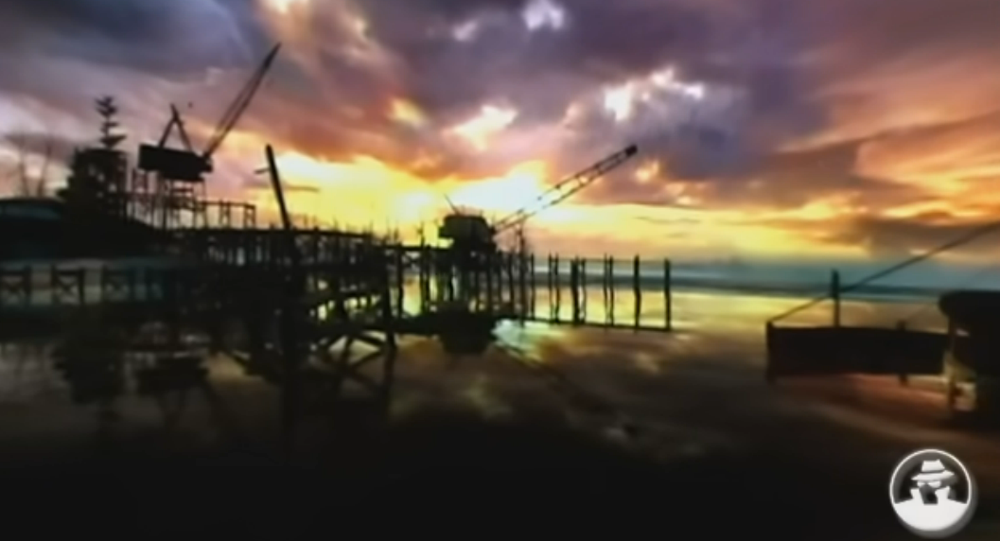
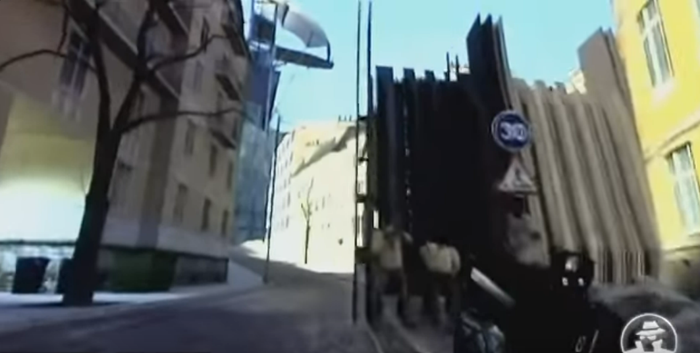
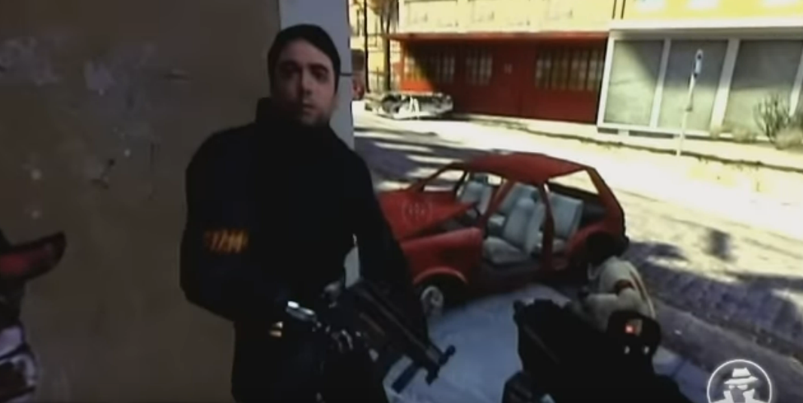
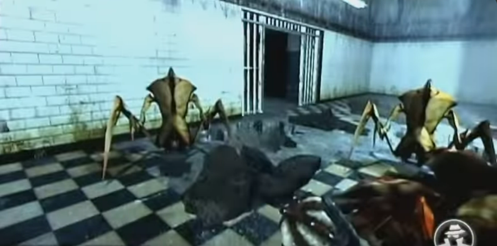
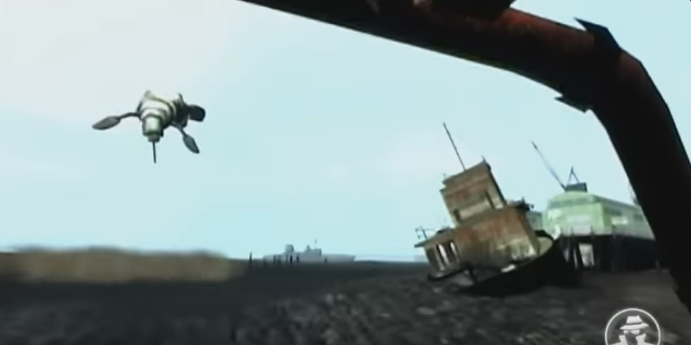
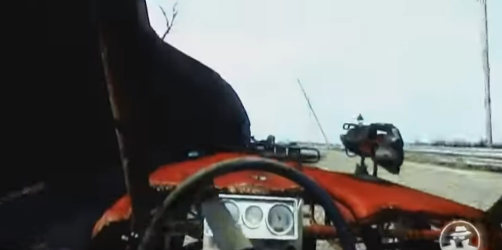
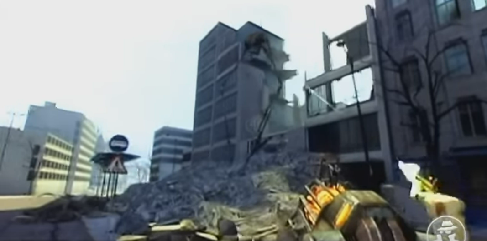

A rundown of the 2003 E3 Tech Demo.

The Tech Demo starts out with an explanation of the new models, using the Gman as an example of this. The presenter goes into detail about how the face models work, stating how the models have face muscles and the ability for them to speak adds versatility for other languages.
One of the main purposes of this tech demo is to showcase the new graphical capabilities of the Source Engine.


This segment of the tech demo showcases the physics part of the Source Engine. This part showcases things like wood breaking, barrels falling and exploding, and most notably a giant pachinko machine.
In addition to this, the textures and sounds are shown for the different objects used. The Source Engine also had the capabilities to render things like stained glass and fire in a realistic way.

In this part of the tech demo, we are shown a fight between the player and a zombie, an enemy that makes its proper introduction in the Ravenholm chapter. The combat previewed here is a simple melee battle with a crowbar.
The most interesting part about this is the fact this is set in Quarry Town, which was the old name for Ravenholm back when the game was still being developed. In the retail version of Half Life 2, there is no boardwalk or beach in Ravenholm.

The Source Engine physics is making another appearance, this time demonstrating how objects interact with each other and how objects and entites can collide with one another.
This is also set in Quarry Town, but is way more familiar to Ravenholm in the retail game in the sense that most of the landscapes here are more aligned with the architecture of Ravenholm.
 This demo is showcasing the AI of allies and enemies, presenting a fight in a destroyed City 17. This is to demonstrate how responsive the AI is showing how the human rebels will fight back against the combine.
Interesting thing to note here, this map of destroyed City 17 does not appear in the retail game.
The antlions have their debut here, showing how the player can be their leader by using bug bait, which has pheromones to trick the antlions into allyship. This is shown to demonstrate the AI of the antlions and their path finding skills.
This part of the demo is set in Nova Prospekt, which does not have any major differences from its retail counterpart.
 lalaaalaaaal laaaaalalalaalalalaalaaaalalalaaalaalalaaalaaaal laaaaalalalaalalalaalaaaalalalaaalaalalaaalaaaal laaaaalalalaalalalaalaaaalalalaaalaalalaaalaaaal laaaaalalalaalalalaalaaaalalalaaalaalalaaalaaaal laaaaalalalaalalalaalaaaalalalaaalaalalaaalaaaal laaaaalalalaalalalaalaaaalalalaaalaa

lalaaalaaaal laaaaalalalaalalalaalaaaalalalaaalaalalaaalaaaal laaaaalalalaalalalaalaaaalalalaaalaalalaaalaaaal laaaaalalalaalalalaalaaaalalalaaalaalalaaalaaaal laaaaalalalaalalalaalaaaalalalaaalaa